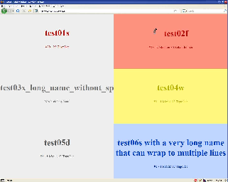

Plugin Information |
|---|
View Status Monitor on the plugin site for more information. |
This plugin shows the state of selected jobs visually on a single screen.
General
The Plugin provides a single self-refreshing page, that shows each job as a block. The job/block has the color of his state.
It's designed for fullscreen usage, so use the F11-key  .
.
Screenshots
|  |
|
Status Monitor with six configured jobs
|
Configuration
Simply configure the job to be shown in the status monitor in the post-build actions.
When >= 4 jobs are configured, the blocks will be splitted in 2 columns.
Language Support
- English
- German
Development
Currently I can't invest much time in further development. The plugin works and fullfils my requirements.
If you have ideas and want to contribute, you're welcome.
Version History
Version 1.3 (2011-11-04)
- JENKINS-11610
Version 1.2 (2009-12-31)
- Add support for Maven and matrix projects (see issue #5161).
Version 1.0 (2009-03-03)
- initial release
{kind=link}